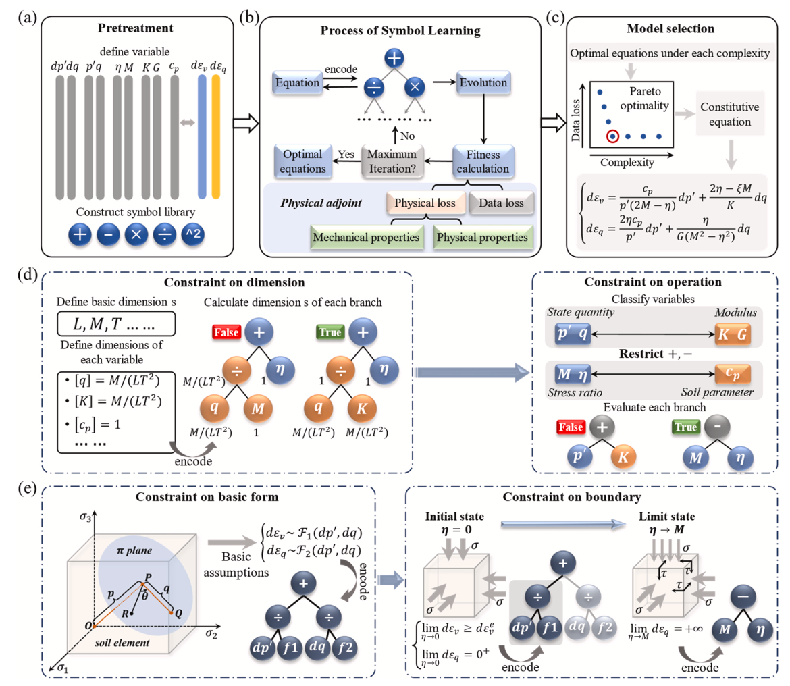

机器学习驱动的 岩土本构建模Machine Learning for Geotechnical Constitutive Modeling
这条研究主线旨在从数据中构建兼具准确性、物理一致性与可解释性的岩土本构模型。研究从物理引导的符号本构发现出发，进一步引入先验模型与热力学约束，并将神经表示和符号表达结合，最终面向土体循环响应与液化孔压演化等问题形成可计算的显式规律。This research program develops data-driven constitutive models that combine accuracy, physical consistency, and interpretability. Beginning with physics-guided symbolic discovery, it incorporates prior constitutive knowledge and thermodynamic constraints, integrates neural representations with symbolic expressions, and applies the resulting methods to cyclic soil response and excess pore-water-pressure evolution during liquefaction.
MODULE 01
符号本构发现Symbolic Constitutive Discovery
以物理量、量纲关系、力学约束与先验模型共同缩减方程搜索空间。Using variables, dimensions, mechanics, and prior models to constrain the equation search space.
MODULE 02
热力学融合Thermodynamic Integration
通过 Re-TINN 与 NSTM 将热力学一致性、神经近似和显式符号规律连接起来。Connecting thermodynamic consistency, neural approximation, and explicit laws through Re-TINN and NSTM.
MODULE 03
工程应用Engineering Application
从循环荷载数据中发现液化过程中超孔隙水压力的可解释演化模型。Discovering interpretable excess pore-water-pressure evolution laws from cyclic loading data.
代表工作Selected Work

PHG-SR·Engineering Applications of Artificial Intelligence · 2026
Discovering constitutive models for clay through physics-guided symbolic regression
Su Chen, Yi Zhu, Suyang Wang, Guosheng Wang, Xiaojun Li
将量纲一致性、力学边界、基本形式与运算约束嵌入符号回归，在较少数据下发现简洁且具有物理意义的黏土本构方程。Embeds dimensional consistency, mechanical boundaries, basic forms, and operator constraints into symbolic regression to discover concise, physically meaningful clay constitutive equations from limited data.
A physics-guided symbolic regression framework for efficient and interpretable sand constitutive modeling
Yi Zhu, Su Chen, Xiaojun Li
以经典本构模型生成物理一致的初始解，再利用试验数据优化 Pareto 前沿；将“先验知识”转化为可搜索、可修正的符号表达。Uses classical constitutive models to generate physically consistent initial solutions, then refines the Pareto front with experiments—turning prior knowledge into searchable and correctable symbolic expressions.
Re-TINN·Theoretical and Applied Mechanics Letters · 2026
Thermodynamic-constrained neural modeling for path-dependent geomaterials via dynamic skeleton states
Yi Zhu, Su Chen, Xiaojun Li
提出逆向热力学神经网络，以应力为主要预测输出，并引入动态参考状态表征土体结构演化，从而在缺少自由能与耗散率标签时仍可施加热力学约束。Introduces a reverse thermodynamics-informed neural network that predicts stress directly and uses dynamic reference states to represent fabric evolution, enforcing thermodynamic constraints without free-energy or dissipation labels.
A neural-symbolic thermodynamic framework for explicit constitutive modeling of geomaterials
Yi Zhu, Su Chen, Xiaojun Li
将热力学信息神经网络与物理引导符号回归闭环结合，交替更新自由能和耗散率的数值表示与显式表达，形成神经符号热力学建模器。Couples thermodynamics-informed neural networks with physics-guided symbolic regression in a closed loop, alternating between numerical representations and explicit expressions for free energy and dissipation.
LIQUEFACTION MODEL·Soil Dynamics and Earthquake Engineering·Volume 213 · February 2027 · 110757
Thermodynamics-informed discovery of excess pore water pressure
evolution in saturated soils
Yi Zhu, Su Chen*, Hua Pan, Xiaojun Li
将热力学信息神经网络与物理信息符号回归相结合，从循环响应中推断塑性自由能与热力学耗散，并发现满足物理约束的显式超孔隙水压力比演化规律。该模型在室内试验和离心机试验数据上进行了验证，展现出跨材料、应力路径与试验尺度的预测能力。
Combines a thermodynamics-informed neural network with physics-informed
symbolic regression to infer plastic free energy and thermodynamic
dissipation, and to discover explicit, physically constrained evolution
laws for the excess pore-pressure ratio. The model is validated across
sand, clay, and centrifuge tests, demonstrating predictive capability
across materials, stress paths, and experimental scales.